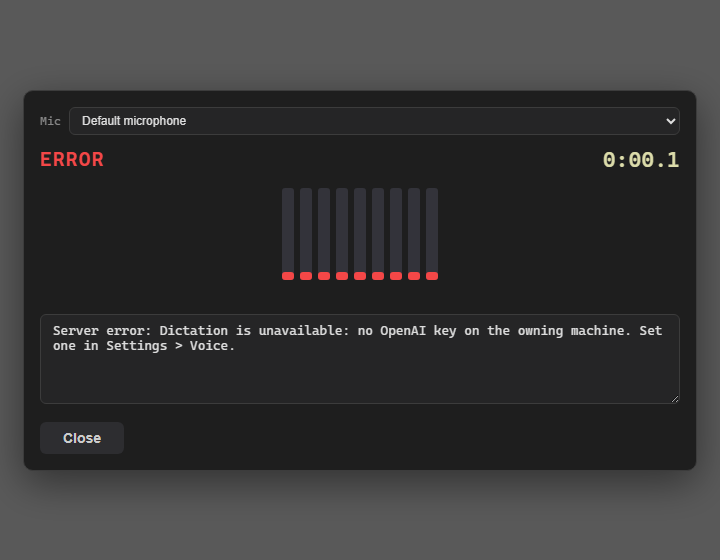
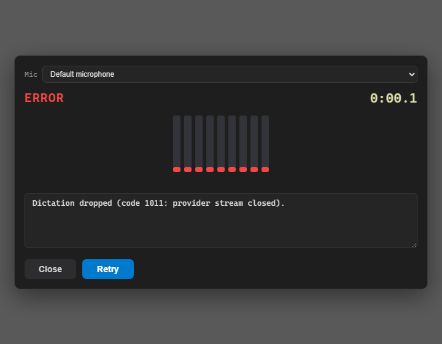
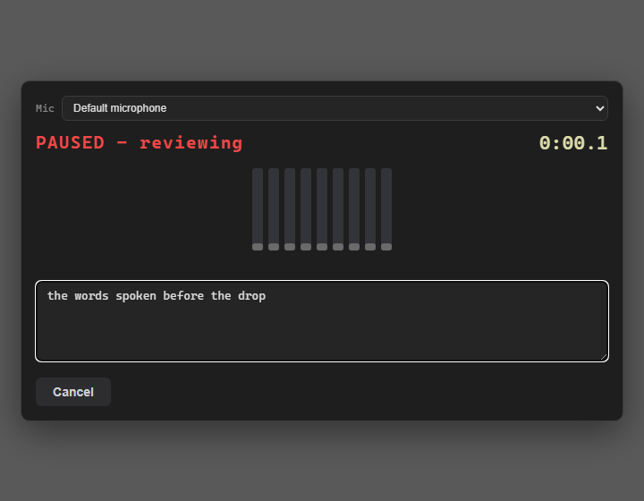

Developer Agent proof. Branch loop/226-dictation-failure-ux. Build: dotnet build cc-director.sln -> Build succeeded, 0 Warning(s), 0 Error(s).
src/CcDirector.Cockpit/wwwroot/js/cockpit-dictate.js): ws.onclose now takes the close event. On a recording/transcribing drop it surfaces the WS code/reason (e.g. Dictation dropped (code 1011: provider stream closed).) instead of the bare literal 'Connection closed.'. If a typed {type:error} arrived just before close, that human cause is shown instead.src/CcDirector.ControlApi/DictationEndpoint.cs): the no-API-key path already sent a typed error before close; this change also wraps session.StartAsync so a provider connect failure sends a typed {type:error} (carrying the human cause from DictationConnectException) before closing the socket, rather than relying solely on the outer catch.capturedBytes. On a drop with >= MIN_RECOVERABLE_AUDIO_BYTES (24000, matching DictationEndpoint.MinRecoverableAudioBytes) a Retry control appears; clicking it reopens the socket and replays the buffered frames capture-first, so the pre-drop words survive. A sub-floor clip (< 24000 bytes) offers no Retry and dismisses cleanly as a cancel.A headless-Chromium harness (dictate_drop_ux_proof.js) drives the real shipped cockpit-dictate.js (the file inlined verbatim, no reimplementation) with a deterministic fake WebSocket and fake mic graph, so each acceptance criterion is exercised and screenshotted. The harness asserts machine-readable facts (close-frame text, bytes the replay socket received, callbacks fired) in addition to the screenshots. Result: allPass: true (see results.json).
Isolation: served on 127.0.0.1:7473 via an in-process Node HTTP server; the live fleet (Gateway 7878, Cockpit 7470, Director 7887) was confirmed still up and was never touched.
| # | Criterion | Expected | Actual (observed) | Result |
|---|---|---|---|---|
| 1 | No bare message | Drop during recording shows WS close code + reason, never 'Connection closed.' |
Dictation dropped (code 1011: provider stream closed). |
PASS |
| 2 | Typed Director cause | A provider-caused failure (no API key) shows that specific cause | ... no OpenAI key on the owning machine. Set one in Settings > Voice. |
PASS |
| 3 | Retry preserves audio | After a drop with >= 24000 bytes, Retry reopens the socket, replays the buffered audio, and the transcript includes the pre-drop words | Retry shown; new socket received 38400 replayed bytes (>= 24000); transcript = the words spoken before the drop |
PASS |
| 4 | Tiny clips cancel cleanly | Drop with < 24000 bytes: no Retry, no noisy error (treated as cancel) | Overlay removed; OnDictateCancel fired; no ERROR dialog |
PASS |


a. drop with recoverable audio - Retry offered

b. after Retry - transcript includes the pre-drop words

No architecture or security drift. The change is confined to one Cockpit JS dialog plus a defensive typed-error-before-close on the existing /dictate endpoint. No new container, no new data flow, no DT-rule change. docs/cencon/ not affected.
The issue flagged a reproduce-check (NOT part of the ready-dev fix): confirm whether the original ~1.4s drop still reproduces on the post-#268 Gateway build. This deterministic failure-UX + retry slice ships as defense-in-depth regardless. A live reproduce-check on the running fleet is left to QA / a separate investigation issue, per the issue's scope ("only becomes a separate investigation issue if it still reproduces"). The UX shipped here is exactly what makes any future drop self-explanatory (code/reason or typed cause) and recoverable (Retry), which is valuable whether or not the drop still occurs.
src/CcDirector.Cockpit/wwwroot/js/cockpit-dictate.js src/CcDirector.ControlApi/DictationEndpoint.cs docs/cencon/proof/issue-226/ (this report + harness + screenshots + results.json)
I believe this is finished. All four acceptance criteria are met and proven against the real shipped dialog code; the solution builds clean (0 warnings, 0 errors).